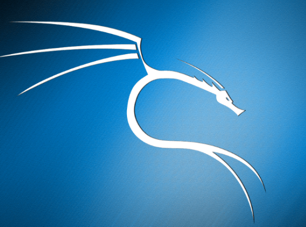
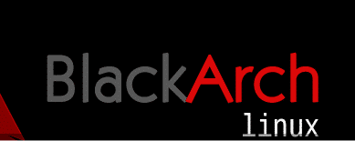
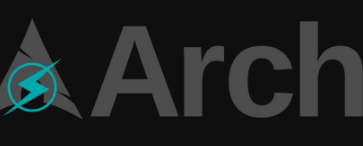

OS para Pentesting

Kali Linux
distribuciones Linux más modernas y avanzadas para pen testing...
Kali

BlackArch
distro basada en Arch Linux con más de 1600 herramientas...
ArchStrike

ArchStrike
Hay alrededor de 5000 paquetes disponibles para casi todo lo que necesite...
BlackArch